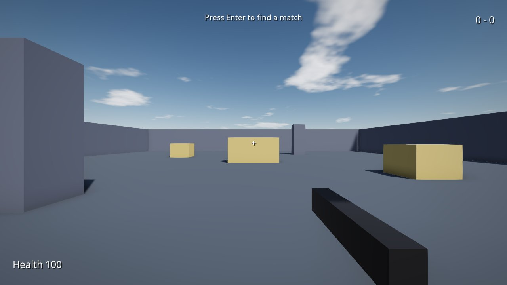
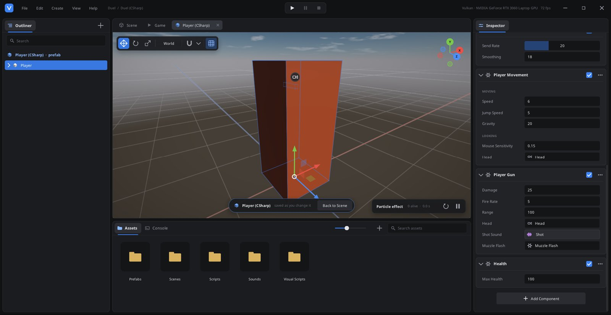

Duel: a multiplayer 1v1 shooter
Build a first-person duel you can play with a friend over Steam: an arena, a player who walks, jumps and shoots, health and respawning, a score, and matchmaking. You'll use most of the editor on the way.

Pick how you'll script it
The steps for the arena, the player, the UI and the network are the same either way. The scripts can be written in C# or made with visual scripting. Pick one here; you can switch at any point (the switch stays at the top as you scroll) and the page changes to match.
C# You'll write four short components. You'll want a code editor for C# (Visual Studio, Rider or VS Code); the editor builds your code whenever you switch back to it.
Visual scripting You'll make four graphs of nodes, no code. Each graph below is the real one from the sample: drag to pan, scroll to zoom, hover a node to see what it does, and press Run to watch the flow.
Make the project
- Open the editor (
dotnet run --project Vertex.Editor) and choose File › New Project. Call it Duel. It gets a folder of its own, with anAssetsfolder in it. - The new scene has a Sun and a Main Camera. Select the camera in the outliner and press Del: each player will bring their own camera, and the first camera in the scene is the one that draws the screen.
- Save the scene with Ctrl+S as
Assets/Scenes/Arena.scene. - Open File › Project Settings and set Startup Scene to
Scenes/Arena.scene, so the project opens on it.
Getting around: hold the right mouse button and use WASD (and Q/E) to fly, the middle button to pan, Alt+left to orbit, and F to frame what's selected. The editor guide has everything.
Build the arena
The arena is boxes: a floor, four walls and some cover. Each needs a Box Collider so players stand on it and shots stop at it.
- The floor. Create › Cube, rename it Floor (F2). In the inspector set its Position to 0, −0.5, 0 and Scale to 40, 1, 40, so its top is at ground level. Press Add Component, type box and pick Box Collider. Under the Mesh Renderer, set the material's Color to a dark grey.
- Walls. Another cube with a Box Collider, scaled 40, 4, 1 at 0, 2, −20. Duplicate it (Ctrl+D) for the other three sides: 0, 2, 20, then two scaled 1, 4, 40 at ±20, 2, 0.
- Cover. A few more cubes to hide behind: one 4 × 2 × 1 in the middle, smaller ones at the sides, and a couple of tall pillars. Make them a warmer colour so they stand out.
- Tidy up: Create › Empty, call it Level, and drag the floor, walls and cover onto it in the outliner.
Use W, E and R to move, rotate and scale in the scene, and hold Ctrl while dragging to snap.
Spawn points
Where the players start: make two empties, Spawn A at 0, 0, 15 and Spawn B at 0, 0, −15 with Rotation 0, 180, 0. Give each a Spawn Point component. The first player starts at the first one, the second at the next, and after dying each comes back at the one furthest from the other player.
Forwards is −Z. A spawn point with no rotation faces −Z, which is towards the middle from Spawn A. That's why Spawn B is turned round.
Make the player
The player is an empty object with a few things under it. Its position is at its feet.
- Create › Empty, named Player. Add three components:
- Character Controller, with Radius 0.4 and Height 1.8: it walks, climbs steps, slides along walls, and can be shot;
- Network Object: it's shared with the other player in a network game, and has an owner;
- Network Transform: its owner's moves are sent to everyone else.
- A body to see: a cube under Player named Body, at 0, 0.9, 0, scaled 0.8, 1.8, 0.8, in a bright colour. No collider: the Character Controller is the player's shape.
- Eyes: an empty under Player named Head, at 0, 1.6, 0, with a Camera (Field Of View 75). Other players' cameras are switched off by themselves, so you only ever see through your own.
- A gun in view: a small dark cube under Head named Gun, at 0.2, −0.17, −0.4, scaled 0.05, 0.065, 0.32.
- A muzzle flash: an empty under Head named Muzzle Flash, at 0.2, −0.15, −0.58, with a Particle System. Turn Emitting and Loop off, set Rate to 0, Burst to 10 and Duration to 0.1; Direction 0, 0, −1; short Lifetime (0.04 to 0.09), Look Spark, some Glow, and Local Space on. Selected, it plays in the scene view as you change it. It's set up so each shot plays it once.
Make it a prefab
Make an Assets/Prefabs folder (right-click in Assets › New Folder), then drag Player from the outliner into it. That makes Player.prefab, a reusable copy. Then delete the Player from the scene: the network manager makes one for each player when the game starts.
From now on, double-click Player.prefab to edit it. It opens in a tab of its own, and changes are saved to the file as you make them.

Walking and looking
Every machine in a network game has every player, so each player's scripts run everywhere. But only the machine that owns a player should move it and read the keyboard for it; the others just see where it goes through its Network Transform. That check is Is Mine, and it's true for everything when playing alone.
Open the player prefab, select Player, press Add Component, type PlayerMovement and choose New Script. The editor makes Assets/Scripts/PlayerMovement.cs (and the project's .csproj, the first time), builds it and adds it. Open the file and replace it with:
- Public properties (
Speed,JumpSpeed…) show in the inspector, where they can be tuned per object, and are saved with the prefab.[Header]puts them in titled sections. Headis a slot for another object. In the inspector, drag Head from the outliner onto it, or click it and pick from the list.IsMineskips everything on other players' machines.- The mouse turns the whole player left and right, but only tips the head up and down. Walking goes the way the player faces, and the Character Controller does the sliding along walls.
Save the file and switch back to Vertex: it rebuilds by itself. Then fill in the Head slot.
Open the player prefab, select Player, add a Visual Script component and press New Visual Script. It makes Player.vscript in Assets/Scripts and opens it in a tab; rename it Player Movement (select it in Assets and press F2). Make this graph: right-click (or Space) to add a node by name, drag from a port to wire it up.
Make these Variables first (the Variables button at the top of the graph): Speed 6, Jump Speed 5, Mouse Sensitivity 0.15, Pitch 0 (numbers), and Head (an object).
- On Mouse Pressed › Lock Cursor takes the mouse when you click; On Key Pressed (Escape) lets it go.
- On Update runs every frame. The Branch on Is Mine stops here on other players' machines.
- Sequence runs its outputs in order: first looking (only while the mouse is locked), then walking.
- Looking: Rotate By turns the player by the mouse's X. Pitch remembers how far the head is tipped, kept between −85° and 85° by Clamp, and Set Rotation tips the Head.
- Walking: two Axis nodes turn A/D and W/S into −1, 0 or 1, times Speed. Move Character does the rest: it walks along the way the player faces, falls, and jumps while Space is held on the ground.
The Head variable is empty in the graph: the graph is shared by every object that runs it, so which object is this player's head is set on the object. Select Player, and under the Visual Script component's Variables, click Head and pick Head (or drag it in from the outliner). Values set there are this object's own; the ↶ button puts one back to the graph's.
Try it: drag the prefab into the scene for a moment, press Play, click in the game view, and walk round. Esc gives you the mouse back, and Stop puts the scene back as it was.
Shooting
Shots are instant: a ray from the eyes, the way you're looking. Two network events carry them between machines:
- Shot, sent to everyone about the shooter, so every machine plays the sound and the flash;
- Hit, sent to the owner of whoever was hit, with the damage and who shot. Each player's own machine is in charge of their health.
For the sound, copy a short .wav into the project's Assets/Sounds folder (the sample's is Samples/Duel/Assets/Sounds/Shot.wav). The Assets panel notices new files by itself.
Add a new script to Player called PlayerGun:
Raycastfinds the first collider along the ray, leaving out the shooter's own (the last argument).NetworkScene.SendEvent(name, about, to, values...)sends a network event. Playing alone, it comes straight back.OnNetworkEventis called on the components of the object an event is about: here, each machine's copy of the shooter hears "Shot".- Fill the slots: Head with Head, Shot Sound with your sound, and Muzzle Flash with the Muzzle Flash object (the slot takes its Particle System).
Add a second Visual Script to Player, with a new script called Player Gun.vscript:
- Every frame, if it's this machine's player, the mouse is locked and the left button is held, the Cooldown lets one shot through every 0.2 seconds.
- Send Network Event "Shot" goes to everyone, about this object (its Target is left empty, which means itself).
- Camera Ray gives where the camera is and the way it looks; Raycast sends a ray along it, skipping the shooter, and goes on to Hit or Missed.
- On a hit: "Hit" to the Owner of the object hit, with A the damage (variable Damage, 25) and B the shooter (Self).
- On Network Event "Shot" runs on every machine's copy of the shooter: Play Sound (choose your sound on the node) and Play Effect on the child called "Muzzle Flash".
Health and coming back
When a "Hit" arrives, the player's own machine takes the damage off. At none left it tells everyone who scored and starts again at the spawn point furthest from the other player.
A third script on Player, Health:
- The hit's values come in the order they were sent: the damage, then the shooter.
- "Scored" is about no object (
null), so every component in the scene hears it: the HUD counts it. - Setting
Transform.Positionteleports a Character Controller. The Network Transform sends the new place to everyone.
A third Visual Script on Player: Health.vscript, with number variables Health and Max Health (both 100).
- On Start fills Health up.
- On Network Event "Hit": on the owner's machine, Health goes down by A (the damage).
- At 0 or less (Compare, Less Or Equal), "Scored" goes to every script with the shooter (B of the hit) as its value. Then Respawn Point gives the furthest spawn point, Set Position and Set Rotation put the player there, and Health is filled again.
The HUD
The writing on screen is UI made of objects. Choose Create › UI › Text: it makes a Canvas to hold it, and switches the view to the Game tab, where UI is arranged. Rename the canvas HUD, and make four texts under it:
| Name | Text | Where (its UI Rect) |
|---|---|---|
| Status | Press Enter to find a match | Top middle: anchors 0.5, 0 |
| Health | Health 100 | Bottom left: anchors 0, 1 |
| Score | 0 - 0 | Top right: anchors 1, 0 |
| Crosshair | + | The middle |
Drag them into place in the Game tab, and give them a bigger Font Size and a Shadow to read over the arena.
Add a script to HUD called DuelHud, and drag the Status, Health and Score texts into its three slots (each takes the object's UI Text):
NetworkManager.Instance is the scene's network manager (next step): QuickMatch() finds or hosts a game, Status says how it's going, and LocalPlayer is this machine's player.
Add a Visual Script to HUD: Duel Hud.vscript, with number variables Mine and Theirs, and object variables Status Text, Health Text and Score Text.
- Enter, when not already online, runs Quick Match: join a game with room, or host one.
- Every frame a Sequence writes the three texts with Set Text: the network status (or the hint, while offline), the local player's health read with Get Variable On, and the score joined into "2 - 1".
- "Scored" arrives with who scored: Same Object as the Local Player adds to Mine, otherwise to Theirs.
Then, on the HUD's Visual Script, set the three text variables to the three text objects:

The network manager
One object runs the network game. Create › Empty, call it Network, and add a Network Manager:
| Setting | Set to | Why |
|---|---|---|
| Service | Steam | Or Local Network, to play on one PC or a LAN without Steam. |
| Steam App Id | 480 | Valve's Spacewar test app, which anyone can use while developing. |
| Game Tag | something of your own, like my-duel | Every game testing with 480 shares Spacewar's lobbies. The tag makes sure you only find your own. |
| Max Players | 2 | It's a duel. |
| Player Prefab | Player | Each player gets their own copy, owned by them, at a spawn point. |
| Spawn When Offline | on | You get a player to walk round with before connecting. |

Save the scene.
Play it
On your own
Press Play. You start at Spawn A with your own player; click to take the mouse, walk, jump and shoot. The status says Press Enter to find a match.
Two players on one PC
Set the Network Manager's Service to Local Network and save. Then start a second editor with the same project (another dotnet run --project Vertex.Editor, and open the project), and press Play in both. Press Enter in the first: it looks for a game, finds none, and hosts. Press Enter in the second: it finds the first and joins, and its player starts at Spawn B. Shoot each other!
Starting anything made with Vertex with -lan on its command line uses the local network instead of Steam, whatever the Network Manager says. The finished sample, for example: dotnet run --project Samples/Duel -- -lan.
Over Steam
Set Service back to Steam. Each player needs Steam running and signed in, with their own account, on their own PC. Press Enter: the first to look hosts a Steam lobby tagged with your Game Tag, and the other joins it. The game runs as Spacewar (app 480) as far as Steam is concerned, which is fine while testing; a released game needs an app ID of its own.
The editor doesn't make a standalone build of a game yet. To run a project outside the editor, give it a Program.cs and a reference to the engine (its package, or its project from source) as the sample does (Samples/Duel/Program.cs and Duel.csproj): new Game { StartScene = "Scenes/Arena.scene" }.Run("Duel");
Where next
Some things to add, each using something new:
- Sparks where shots land: a particle system you move to the hit point and Emit Particles from (C#:
ParticleSystem.Emit). - A health pickup: a trigger collider with On Trigger (C#:
OnTriggerEnter) that refills health. - A rocket launcher: Network Spawn a rocket prefab with a Rigidbody, and explode it On Collision.
- A round timer: the host counts down and sends a network event when it's over.
- A fancier muzzle flash: design one with a VFX graph.
Keep the node reference or the C# API open while you work. Press Ctrl+K anywhere in these docs to search both.